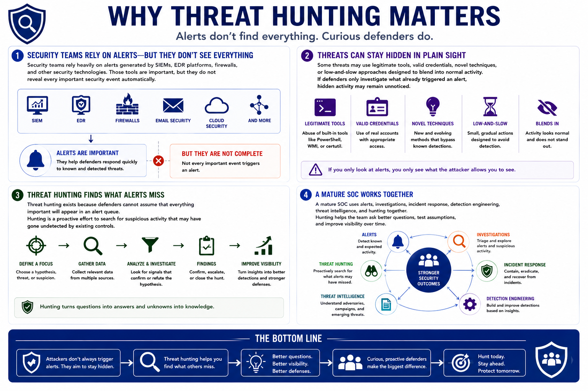

What is Threat Hunting?
Why Threat Hunting Exists
Connecting to LMS... Progress: in progress
Version 1.0 | Introductory overview of defensive threat hunting practices.

Narration
Security teams rely heavily on alerts generated by SIEMs, EDR platforms, firewalls, and other security technologies. Those tools are important, but they do not reveal every important security event automatically.
Some threats may use legitimate tools, valid credentials, novel techniques, or low-and-slow approaches designed to blend into normal activity. If defenders only investigate what already triggered an alert, hidden activity may remain unnoticed.
Threat hunting exists because defenders cannot assume that everything important will appear in an alert queue. Hunting is a proactive effort to search for suspicious activity that may have gone undetected by existing controls.
A mature SOC uses alerts, investigations, incident response, detection engineering, threat intelligence, and hunting together. Hunting helps the team ask better questions, test assumptions, and improve visibility over time.